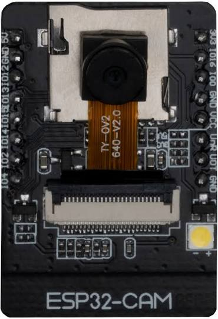

AI Thinker ESP32-CAM
The AI Thinker ESP32-CAM is an original ESP32 module with an OV2640 camera, a microSD socket and a status LED on a small board. Its CPU is an Xtensa LX6, so Juno compiles for it with the same Xtensa backend as the Nano ESP32.
The board has 4 MB of PSRAM. Camera.begin() leaves frame-buffer ownership inside the camera driver; application code
receives copied bytes through Camera.capture(). For other large, caller-owned byte payloads use the static Psram API.
PSRAM is not part of the Java arena and is not managed by the garbage collector.

What Juno supports
| Feature | Status | Notes | Example |
|---|---|---|---|
Gpio, DigitalOutput |
✓ | Resolve portable D0–D13 and A0–A5 names through the board context; board-specific aliases are available where documented, including the red status LED on GPIO33. |
AiThinkerEsp32CamBlink |
Delay, Serial |
✓ | Serial output uses a USB-serial adapter because the board has no USB port. | |
| Classes, interfaces and inheritance | ✓ | ||
BigInteger, BigDecimal, MathContext |
✓ | ||
| Wi-Fi station | ✓ | Through MCU.getWifi(); credentials can come from the onboard microSD card. |
AiThinkerEsp32CamWifiFromSd |
HttpClient (HTTP and HTTPS) |
✓ | ||
HttpServer (HTTP) |
✓ | Runs on the station address. | AiThinkerEsp32CamStream |
| HTTPS server | — | The board supports HTTPS clients, but not TLS server sessions. | |
| HTTP response streaming | ✓ | HttpServer.beginStream() sends the camera's MJPEG response. |
AiThinkerEsp32CamStream |
Email over TLS (Smtp.sendTls, Pop3Client) |
— | The AI Thinker target does not provide Juno's TLS email runtime. | |
| Bluetooth LE (LEGO Powered Up) | ✓ | Through RemotePoweredUpHub and ArduinoBLE. |
PoweredUpMotorEncoders |
SdCard |
✓ | Built-in microSD socket through MCU.getSdCard(), using GPIO13 as chip select. |
AiThinkerEsp32CamWifiFromSd |
| OV2640 camera | ✓ | MCU.getCamera() captures JPEG frames into a caller-owned buffer; the native driver owns the camera frame buffer. |
AiThinkerEsp32CamCapture |
| Explicit PSRAM buffers | ✓ | The static Psram API provides caller-owned byte buffers; PSRAM is outside the Java arena. |
|
Threads, synchronized, locks, StructuredTaskScope, ScopedValue |
✓ | ||
| USB HID mouse | — | The board has no native USB port; use a USB-serial adapter for flashing and serial output. | |
@Watchdog |
— | The AI Thinker ESP32-CAM target does not expose a Juno watchdog runtime. | |
Cryptographic UUID.randomUUID() |
— | No cryptographic UUID entropy provider is exposed for this target. | |
Double-precision java.lang.Math |
— | The board profile exposes only single-precision math functions. |
The board has no USB port, so flash it through a USB-serial adapter; the port is passed with
-Djuno.port.